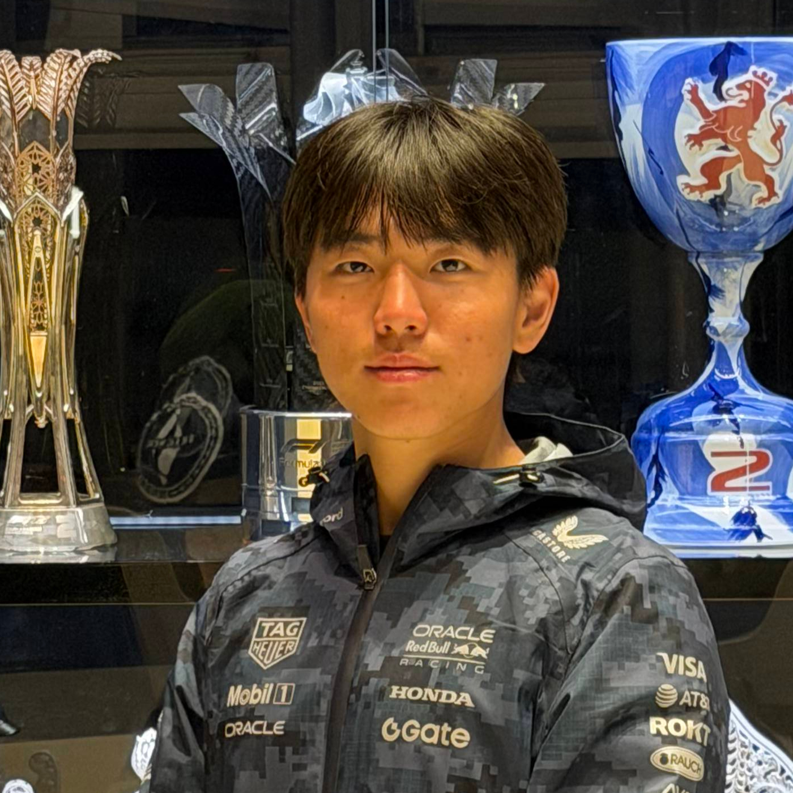

Brian Kang
Robotics · Engineering Science
About
I am a fourth year Engineering Science student at the University of Toronto specializing in Robotics. I’m passionate about building robotic systems and enjoy working at the intersection of mechanical design, electronics, embedded systems, controls, and machine learning. I enjoy working across the full hardware and software stack.

Experience
Trackside Engineering Placement - Red Bull Powertrains Formula One
My work was split across two sub-teams: Product Validation and Confirmation & Durability.
- Product Validation: analyzing F1 power unit telemetry data, finding patterns, developing models, and performing competitor analysis.
- Confirmation & Durability: running power units on the dyno, testing to end of life to determine reliability and performance degradation, as well as calibrating new engines for track use.
Personal Projects
6-DOF Robot Arm
Designing and building a 6-DOF robotic arm integrating mechanical design, electronics, embedded control, and motion planning.
Machine Learning Soccer Analytics Tracker
Developed a computer vision pipeline to detect players and the ball for tracking, extracting player and team performance metrics from soccer match footage.